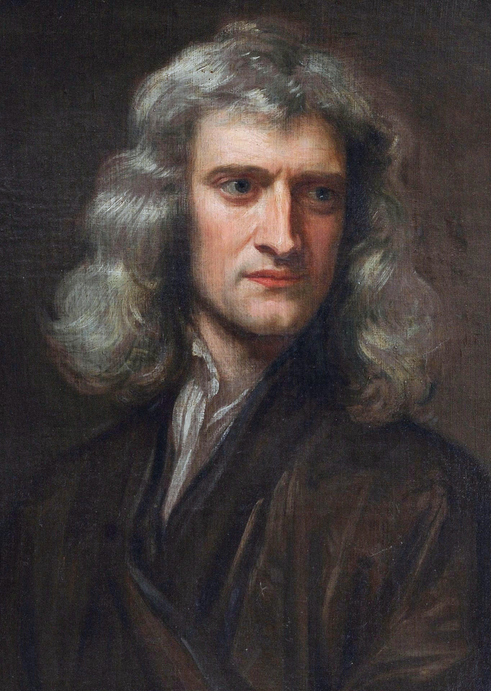

Уява важливіша за знання. Знання обмежені, тоді як уява охоплює весь світ, стимулюючи прогрес і народження нових ідей.
Відомі особистості

Альберт Ейнштейн
фізик-теоретик
фізик-теоретик
❝

Видатний англійський фізик, математик, астроном
❝
Наполегливість і постійне прагнення до знань дозволяють людині досягати результатів, які спочатку здаються неможливими.